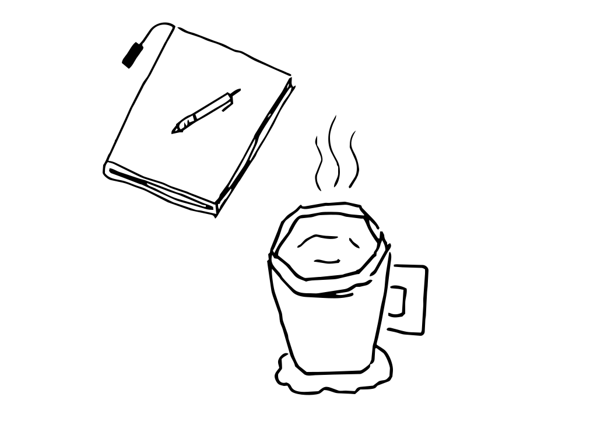

Just a regular person.
Degree in DAW, recently survived DAM.
Currently diving headfirst into Frontend. Building things that look nice on screens is my latest obsession.
When writing code, I spend most of my time agonizing over which font and color to use.
Currently on the job hunt. If you need someone who codes, designs, and draws cool SVGs, hit me up.
(Also, yes, some days everything is falling apart — usually right when I can't debug a CSS layout issue.)
